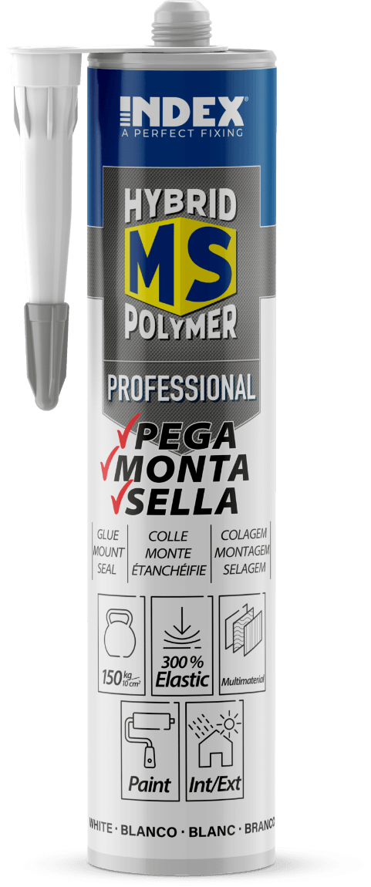
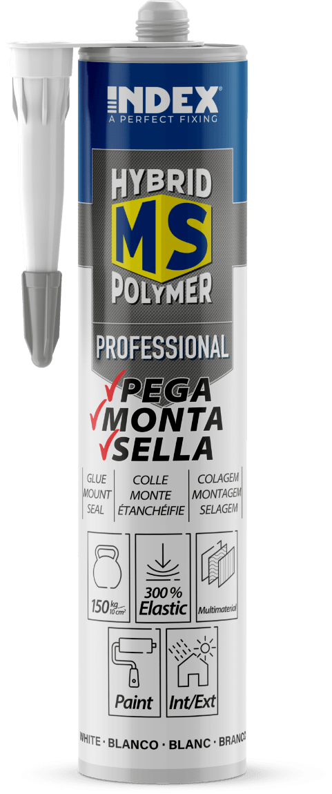

Nuovi adesivi
Hybrid MS Polymer
Versatilità, prestazioni elevate e facilità d'uso
Gli adesivi Hybrid MS Polymer di INDEX® fondono la resistenza del poliuretano con le proprietà isolanti del silicone, creando un prodotto con prestazioni adesive elevate che combina i vantaggi di entrambi i materiali.
La gamma è composta da tre tipi di adesivi, destinati a usi diversi:
- MS-PR: Professional (in 3 colori)
- MS-TR: Transparent
- MS-SF: Superfast High Tack


 



 
